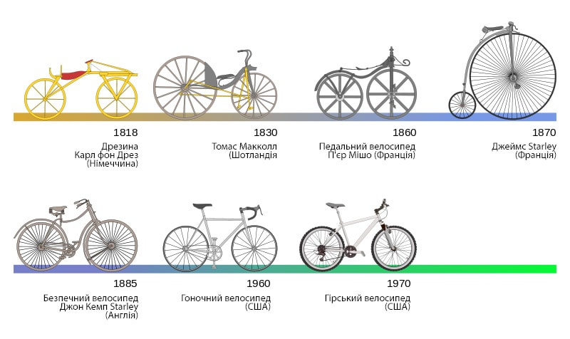
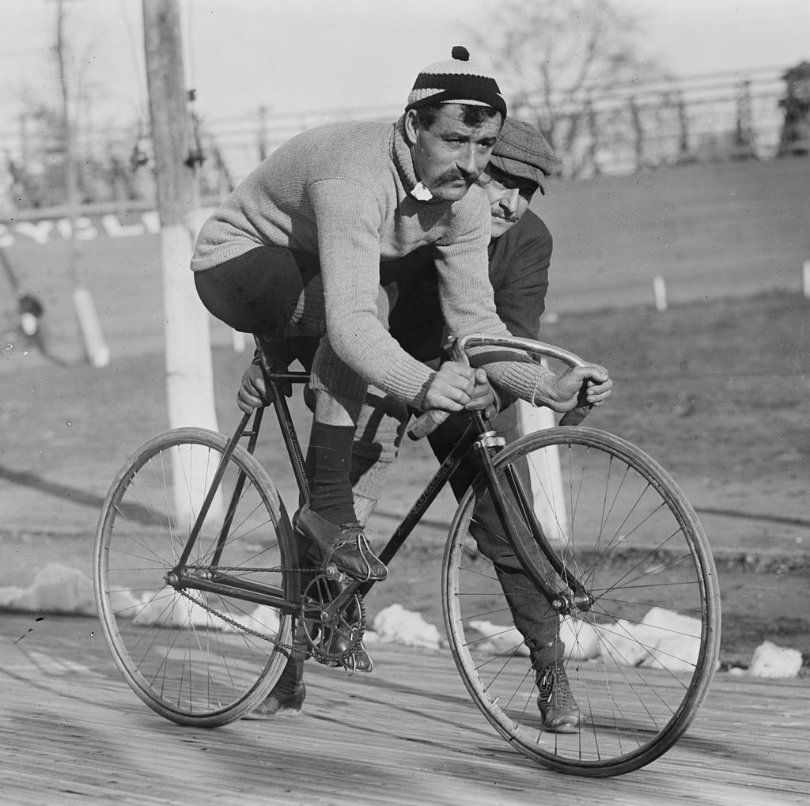

Цікаві факти про велосипед
Історія
Перший велосипед з’явився через кліматичні зміни. У квітні 1815 року в Індонезії сталося виверження вулкана. Через це змінився клімат. У північній півкулі літо було дуже холодним, сільськогосподарські культури не вродили і знизилося поголів’я коней. Однак швидко пересуватися було все ж потрібно і в 1817 році німецький професор інженерії і механік барон Карл фон Дрез представив свій винахід – з двох металевих коліс без шин, дерев’яної рами, керма та шкіряного сідла. У велосипеда тоді не було педалей – велосипедисту потрібно було з силою відштовхуватися підошвами від поверхні.
Примітно, що прізвище німця в назві цього винаходу не закріпилося, але в честь барона Дреза була названа прославлена дрезина – платформа для переміщення по рейкових шляхах з механічною тягою.
Педалями велосипед обзавівся лише в 1842 році. Педальний механізм прикріплювався до заднього колеса тонкими стрижнями.
Термін «велосипед» з’явився в 1861 році у Франції. Його придумав винахідник П’єр Міші. Француз хотів знайти таке поняття, яке б відображало принцип дії транспорту на двох колесах з найпростішим механічним приводом.
Суспільство
Дослідження двох сотень людей, яке проводив Університет Брістоля, виявило, що працівники, які отримують фізичні навантаження перед роботою або в обідню перерву, виконують більші обсяги роботи і при цьому витрачають на неї менше часу. Такі навантаження впливають і на підвищення мотивації, якості роботи і збільшують стійкість до стресів. Тому їздити на роботу велосипедом – дуже слушна думка.
Спорт
У велоспорті існує безліч кумедних термінів. Наприклад, «глухарем» називають велосипед без вільного ходу, а бараном – класичну модель велосипедного керма. У гонках є «ліквідатори» – вони не дають суперникам піти у великий відрив – і «листоноші», які уникають активної боротьби і вважають за краще вести гонку пасивно. А термін «танцівниця» застосовують до тих, хто їде на велосипеді стоячи на педалях.
Найстаріше велосипедне змагання. Льєж – Бастонь – Льєж, або «Стара Леді» – це класична одноденна гонка, яку вперше провели в 1882 році. Її організувала газета L’Expresse. Спочатку в гонці брали участь тільки аматори. Через 12 років змагання стало професійним. На дистанції спортсменам доводиться боротися з довгими крутими підйомами, а частина шляху вимощена бруківкою.
